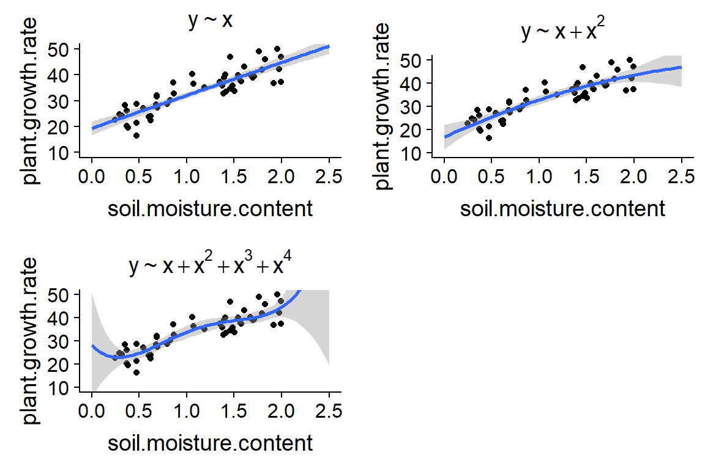

Évaluation et sélection de modèles
22 octobre 2018
Notes sur les évaluations à venir
Laboratoire sur l’ANOVA dû ce mercredi.
Prochain laboratoire (sélection de modèles) disponible mercredi, à remettre le 7 novembre.
Articles pour la critique d’article disponibles sur Moodle mercredi, avec un formulaire pour indiquer votre équipe et votre choix.
Objectifs
Identifier les problèmes liés au sous-ajustement et surajustement de modèles.
Connaître les avantages et inconvénients de différentes méthodes visant à évaluer l’ajustement de modèles.
Utiliser l’AIC pour comparer différents modèles.
Combiner les prédictions de plusieurs modèles.
Types d’erreurs des modèles
Exemple

À partir de données d’un nombre limité de sites (ex.: 40 peuplements), nous souhaitons estimer la densité de population du grand polatouche en fonction de différentes variables, incluant:
- le type de peuplement (feuillu, résineux, mixte);
- l’âge du peuplement;
- les températures moyennes du mois le plus froid et le plus chaud;
- la surface de forêt continue autour du peuplement;
- la présence ou absence d’autres espèces de petits mammifères.
Exemple
Quels sont les avantages et désavantages:
- d’un modèle incluant le nombre maximal de prédicteurs et
- d’un modèle incluant un nombre réduit (ex.: 1 ou 2) prédicteurs?
Quelle est la différence entre le type d’erreurs commises dans chaque cas?
Modèle trop simple
Omet des prédicteurs qui ont un effet sur la variable étudiée.
Dans ce cas, le modèle est sous-ajusté (underfit).
Par exemple, si le polatouche est davantage associé aux conifères, un modèle ignorant ce facteur va sous-estimer sa densité dans les peuplements résineux.
Erreur systématique et indépendante du nombre d’observations (biais).
Modèle trop complexe
Détecte des associations entre variables qui sont des coïncidences du jeu de données particulier.
Dans ce cas, le modèle est surajusté aux données (overfit).
Plus un modèle inclut de prédicteurs, plus l’échantillon doit être grand pour estimer les effets avec la même précision.
Erreur aléatoire diminuant avec le nombre d’observations (variance).
Effet du nombre de prédicteurs

Autre exemple: ajuster une fonction polynomiale

Sources d’erreur et complexité des modèles
On ne connait pas la fonction exacte reliant la réponse du modèle aux prédicteurs.
Plus de paramètres: on approxime cette fonction avec moins de biais, mais plus de variance (sensibilité au “bruit” des données). Compromis atteint à un certain nombre de paramètres.
Avec un échantillon plus grand, le nombre optimal de paramètres augmente.
Sources d’erreur et complexité des modèles

Prédiction et explication
Pour ce cours, nous mettons l’accent sur la capacité prédictive des modèles: quel modèle prédira le mieux la réponse pour de nouvelles observations, indépendantes de celles utilisées pour estimer les paramètres du modèle?
Si le but est plutôt d’identifier les causes de la variable réponse (explication), il demeure utile de limiter la complexité des modèles.
Principe de parcimonie ou “rasoir d’Ockham”: il est préférable d’utiliser le minimum de causes nécessaires pour expliquer un phénomène.
Critères de comparaison des modèles
Coefficient de détermination (\(R^2\))
- Fraction de la variance totale de la réponse est expliquée par le modèle.
- Deux versions rapportés dans le résultat de
lm: Multiple R-squared et Adjusted R-squared.
- \(R^2\) “multiple” basé sur la somme des écarts carrés résiduels et totaux:
\[ R^2 = 1 - \frac{\sum_{i=1}^n (y_i - \hat{y_i})^2}{\sum_{i=1}^n (y_i - \bar{y})^2} \]
- Cette valeur augmente toujours lorsqu’on ajoute un nouveau prédicteur; favorise les modèles plus complexes.
Coefficient de détermination (\(R^2\))
La version ajustée du \(R^2\) divise chaque somme des écarts carrés par le nombre de degrés de liberté approprié.
Le \(R^2\) ajusté peut diminuer pour un modèle plus complexe; c’est un estimateur moins biaisé du \(R^2\) de la population.
L’une ou l’autre version du \(R^2\) convient pour comparer deux modèles linéaires comprenant le même nombre de paramètres ajustables.
Le \(R^2\) ajusté ne pénalise pas les modèles plus complexes autant que l’AIC.
Tests de significativité
Si deux modèles ne diffèrent que par un prédicteur, ex.:
y ~ x1 + x2ety ~ x1 + x2 + x3, on peut choisir le modèle plus complexe si l’effet du nouveau prédicteurx3est significatif.Nous avons déjà utilisé cette méthode pour déterminer s’il fallait inclure ou non l’interaction dans un modèle d’ANOVA à deux facteurs.
Il existe des méthodes séquentielles (stepwise) pour choisir entre plusieurs modèles en ajoutant ou supprimant une variable à la fois.
Tests de significativité
Inconvénients
La valeur \(p\) mesure la probabilité d’obtenir les résultats observés selon l’hypothèse nulle, pas le pouvoir prédictif du modèle.
Le seuil de significativité pour l’inclusion d’une variable (ex.: \(\alpha = 0.05\)) est arbitraire.
Avec les méthodes séquentielles, il faut considérer l’augmentation de la probabilité d’erreur de type I (problème des comparaisons multiples).
Ensemble de validation
Évaluer un modèle d’après son erreur de prédiction (ex.: \(\sum (y_i - \hat{y_i})^2\)) pour un jeu de données différent de celui utilisé pour estimer les paramètres.
En pratique, séparer un jeu de données en un ensemble pour la calibration des modèles (training set) et un ensemble pour la validation (validation set).
Méthode très courante pour de grands jeux de données. La majorité des observations (ex.: 70-80%) font partie de l’ensemble de calibration.
Pas efficace si on a peu de données.
Validation croisée
Diviser aléatoirement les observations en groupes et mesurer l’erreur de prédiction des observations d’un groupe selon un modèle ajusté au reste des observations.
Ex.: Pour une seule observation par groupe (leave-one-out cross-validation), on calcule \(\sum (y_i - \hat{y_i})^2\) où chaque valeur prédite \(\hat{y_i}\) vient du modèle ajusté sans l’observation \(i\).
Requiert de réajuster chaque modèle considéré \(n\) fois (\(n\) est le nombre d’observations).
Validation croisée
Si \(n\) est grand, on peut diviser les observations en \(k\) groupes (k-fold cross-validation), par exemple \(k\) = 10, ajuster chaque modèle \(k\) fois en laissant une fraction \(1/k\) des observations de côté.
Packages pour la validation croisée dans R, incluant cvTools.
Comparaison de modèles avec l’AIC
Origine
Le critère d’information d’Akaike (AIC) est basé sur la théorie de l’information.
L’AIC approxime la perte d’information encourue en estimant la “vraie”" fonction déterminant la réponse, \(f\), par un modèle \(g\) donné.
L’AIC mesure cette perte d’information à une constante près. La valeur absolue de l’AIC n’a aucune signification, tout ce qui compte c’est la différence d’AIC entre modèles.
Définition de l’AIC
\[ AIC = -2 \log(L) + 2 K \]
- \(L\) est la fonction de vraisemblance (likelihood).
- \(K\) est le nombre de paramètres estimés par le modèle.
- Plus l’AIC est petit, plus le modèle est bon.
Vraisemblance
\(L(\theta | y)\) correspond à la probabilité des observations de \(y\) selon la valeur des paramètres \(\theta\) du modèle.
Estimation des paramètres par le maximum de vraisemblance: équivalente à la méthode des moindre carrés pour des modèles linéaires.
Nombre de paramètres estimés
Comme \(R^2\), la vraisemblance tend à augmenter avec chaque paramètre ajouté au modèle.
Le deuxième terme de l’AIC (\(2K\)) pénalise les modèles plus complexes.
- Pour un modèle linéaire, \(K\) doit compter l’ordonnée à l’origine ainsi que l’estimé de la variance des résidus, \(\sigma^2\).
- Pour le modèle \(y = \beta_0 + \beta_1 x_1 + \beta_2 x_2 + \epsilon\), \(K = 4\).
L’AIC aurait pu être défini comme \(-\log(L) + K\). Le facteur de 2 a été ajouté pour des raisons historiques.
AIC et validation croisée
Comparaison des modèles avec l’AIC est équivalente à un type de validation croisée (leave-one-out cross-validation).
L’AIC estime donc le pouvoir prédictif des modèles sur de nouvelles données, sans avoir à répéter l’ajustement du modèle.
AICc pour petits échantillons
- Si \(n\) est petit par rapport au nombre de paramètres estimés (\(n/K\) < 40), on remplace l’AIC par l’AICc, qui inclut une correction supplémentaire.
\[ AICc = -2 \log(L) + 2 K \left( \frac{n}{n-K-1} \right) \]
- \(n / (n-K-1) > 1\), donc le deuxième terme de l’AICc est un peu plus grand que \(2K\), mais la différence entre les deux diminue à mesure que \(n\) augmente.
- Il faut utiliser la même mesure (AIC ou AICc) pour tous les modèles comparés.
Classification des modèles avec l’AIC
Après avoir calculé l’AIC (ou AICc) pour tous les modèles, on les classe en fonction de la différence entre leur AIC et le minimum des AIC (i.e. celui du meilleur modèle): \(\Delta AIC = AIC - \min AIC\).
Pour le meilleur modèle, \(\Delta AIC = 0\).
Rapport de plausibilité
- Il n’est pas certain que le meilleur modèle identifié par l’AIC serait le même avec un échantillon différent.
- On peut calculer le rapport de plausibilité (evidence ratio) de chaque modèle vs. celui avec un AIC minimal.
\[ e^{-\frac{\Delta AIC}{2} } \]
- Par exemple, \(\Delta AIC = 2\) correspond à un ratio de ~0.37 (~3 fois moins probable); \(\Delta AIC = 10\) correspond à un ratio de ~0.0067 (~150 fois moins probable).
Poids d’Akaike
- On peut normaliser les rapports de plausibilité par leur somme pour obtenir le poids d’Akaike \(w_i\) d’un modèle \(i\).
\[ w_i = \frac{e^{\frac{-\Delta AIC_i}{2}}}{\sum_{j=1}^{m} e^{\frac{-\Delta AIC_j}{2}}}\]
- La somme des \(w_i\) est égale à 1. Ces poids représentent la probabilité quun modèle soit le meilleur selon l’AIC si on répétait l’échantillonnage.
Exemple
Jeu de données de Johnson et Simberloff sur le nombre d’espèces de plantes vasculaires de différentes îles britanniques, vu au dernier laboratoire.
iles <- read.csv("../donnees/britain_species.csv")
str(iles)## 'data.frame': 42 obs. of 7 variables:
## $ island : Factor w/ 42 levels "Ailsa","Anglesey",..: 1 2 3 4 5 6 7 8 9 10 ...
## $ area : num 0.8 712.5 429.4 18.4 31.1 ...
## $ elevation : int 340 127 874 384 226 1343 210 103 143 393 ...
## $ soil_types : int 1 3 4 2 1 16 1 3 1 1 ...
## $ latitude : num 55.3 53.3 55.6 57 60.1 54.3 57.1 56.6 56.1 56.9 ...
## $ dist_britain: num 14 0.2 5.2 77.4 201.6 ...
## $ species : int 75 855 577 409 177 1666 300 443 482 453 ...Conseils et points à surveiller
Tous les modèles à comparer doivent avoir la même variable réponse.
Tous les modèles doivent êtres basés sur le même nombre d’observations. Attention aux valeurs manquantes (
NA)!Dans l’exemple précédent, tous les modèles étaient nichés (nested). L’AIC peut aussi comparer des modèles non-nichés.
- L’AIC ne nous dit pas si le “meilleur” modèle est bien ajusté aux données.
- Pour un cas où tous les modèles sont nichés, il suffit de vérifier l’ajustement du modèle le plus complexe.
Conseils et points à surveiller
Dans l’exemple, les deux prédicteurs du meilleur modèle selon l’AIC (
log_areaetlat) étaient aussi les deux prédicteurs avec un effet significatif dans le modèle complet. Cela n’est pas toujours le cas.- Il faut éviter de se fier aux valeurs \(p\) et aux intervalles de confiance des paramètres du meilleur modèle choisi par l’AIC.
- Les résultats extraits d’un seul modèle ne tiennent pas compte du fait que nous avons comparé plusieurs modèles.
- Les valeurs \(p\) et les intervalles de confiance du modèle choisi sont trop optimistes.
Algorithmes de sélection séquentielle
Ces algorithmes (forward, backward ou stepwise) visent à trouver le meilleur modèle selon l’AIC sans avoir à les estimer tous (ex.: fonction stepAIC dans R).
Exemple de sélection par addition (forward selection):
- Calculer l’AIC du modèle nul (0 prédicteur);
- Évaluer les modèles à 1 prédicteur (
y ~ x1,y ~ x2, etc.), choisir le meilleur s’il l’AIC est inférieur au modèle nul. - Évaluer tous les modèles avec 2 prédicteurs incluant le 1er prédicteur choisi à l’étape 2, …
- Arrêter si aucun des modèles plus complexes n’améliore l’AIC.
Algorithmes de sélection séquentielle
Inconvénients
Pas de garantie de trouver le modèle avec l’AIC minimal.
On ne sait pas si plusieurs autres modèles sont presque aussi probables.
Ces méthodes encouragent la comparaison d’un très grand nombre de modèles (déconseillé).
Prédictions multi-modèles
- Pour prédire la valeur de la réponse, on peut utiliser le modèle avec l’AIC le plus bas.
- Pour une prédiction plus précise, on peut prendre la moyenne pondérée des valeurs prédites par les différents modèles, avec une pondération basée sur les poids d’Akaike:
\[ \hat{y} = \sum_{i = 1}^m w_i \hat{y_i} \]
- Dans le package AICcmodavg, la fonction
modavgPredcalcule les prédictions multi-modèles de cette façon.
Questions de révision
- Quelles erreurs sont associées à des modèles trop simples (peu de paramètres ajustables) ou trop complexes (beaucoup de paramètres)?
- Comment mesure-t-on le pouvoir prédictif d’un modèle?
- Que signifie la valeur de l’AIC d’un modèle?
- À quoi servent les poids d’Akaike?
Résumé
La sélection de modèles est un compromis entre biais (sous-ajustement) et variance (surajustement).
Le pouvoir prédictif d’un modèle est déterminé en comparant ses prédictions à de nouvelles observations, indépendantes de celles utilisées pour estimer les paramètres du modèle.
L’AIC (ou l’AICc, pour de petits échantillons) est basé sur la vraisemblance du modèle, avec une pénalité pour les modèles comprenant un plus grand nombre de paramètres.
Résumé
L’AIC approxime bien la capacité de prédiction relative de différents modèles et peut donc servir à classer ceux-ci.
La valeur absolue de l’AIC n’a aucune signification. Seules les différences d’AIC entre modèles basés sur les mêmes observations peuvent être interprétées.
Les poids d’Akaike, calculés à partir des différences d’AIC entre modèles, estiment la probabilité que chaque modèle soit identifié comme le meilleur modèle si on répétait l’échantillonnage. Ces poids servent aussi à faire la moyenne pondérée des prédictions de différents modèles.
Références
- Burnham, K.P et Anderson, D.R. (2002) Model selection and multimodel inference : a practical information-theoretic approach, 2e éd. Springer-Verlag, New York.
- Anderson, D.R. et Burnham, K.P. (2002) Avoiding pitfalls when using information-theoretic methods. The Journal of Wildlife Management 66: 912-918. (inclus dans le dossier Articles de référence sur Moodle)
Comment choisir l’ensemble de modèles à comparer?